Last compiled on 2022-10-17 16:44:02
load("C:\\Users\\Daphn\\Documenten\\labjournal\\Data\\soc_df_s5.RData")
load("C:\\Users\\Daphn\\Documenten\\labjournal\\Data\\soc_df_publications.RData")
library(stringr)
library(dplyr)
# empty adjacency matrix for the years 2001-2010
network2010_2013 <- matrix(NA, nrow = nrow(soc_df), ncol = nrow(soc_df))
network2014_2017 <- matrix(NA, nrow = nrow(soc_df), ncol = nrow(soc_df))
network2018_2021 <- matrix(NA, nrow = nrow(soc_df), ncol = nrow(soc_df))
# select publications of the corresponding time era
pubs_sel <- soc_df_publications %>%
mutate(author = tolower(author)) %>%
filter(year >= 2010 & year <= 2013)
# fill the matrix
for (ego in 1:nrow(soc_df)) {
name_ego <- soc_df$last_name[ego] #which ego?
pubs_sel2 <- pubs_sel[str_detect(pubs_sel$author, name_ego), ] #publications of ego
for (alter in 1:nrow(soc_df)) {
name_alter <- soc_df$last_name[alter] #which alter?
network2010_2013[ego, alter] <- as.numeric(sum(str_detect(pubs_sel2$author, name_alter)) > 1) #did alter publish with ego
}
}
# select publications of the corresponding time era
pubs_sel <- soc_df_publications %>%
mutate(author = tolower(author)) %>%
filter(year >= 2014 & year <= 2017)
# fill the matrix
for (ego in 1:nrow(soc_df)) {
name_ego <- soc_df$last_name[ego] #which ego?
pubs_sel2 <- pubs_sel[str_detect(pubs_sel$author, name_ego), ] #publications of ego
for (alter in 1:nrow(soc_df)) {
name_alter <- soc_df$last_name[alter] #which alter?
network2014_2017[ego, alter] <- as.numeric(sum(str_detect(pubs_sel2$author, name_alter)) > 1) #did alter publish with ego
}
}
# select publications of the corresponding time era
pubs_sel <- soc_df_publications %>%
mutate(author = tolower(author)) %>%
filter(year >= 2018 & year <= 2021)
# fill the matrix
for (ego in 1:nrow(soc_df)) {
name_ego <- soc_df$last_name[ego] #which ego?
pubs_sel2 <- pubs_sel[str_detect(pubs_sel$author, name_ego), ] #publications of ego
for (alter in 1:nrow(soc_df)) {
name_alter <- soc_df$last_name[alter] #which alter?
network2018_2021[ego, alter] <- as.numeric(sum(str_detect(pubs_sel2$author, name_alter)) > 1) #did alter publish with ego
}
}
c(dim(network2010_2013), 3)#> [1] 36 36 3net_array <- array(data = c(network2010_2013, network2014_2017, network2018_2021), dim = c(dim(network2010_2013),
3))
net_array[1, 1, 1]#> [1] 1save(net_array, file = "soc_net_array.RData")net_array[, , 1]#> [,1] [,2] [,3] [,4] [,5] [,6] [,7] [,8] [,9] [,10] [,11] [,12] [,13] [,14] [,15] [,16] [,17]
#> [1,] 1 0 0 0 0 0 0 0 0 0 0 0 0 0 0 0 0
#> [2,] 0 1 0 0 0 0 0 0 0 0 0 0 0 0 0 0 0
#> [3,] 0 0 1 0 0 0 0 0 0 0 0 0 0 0 1 0 1
#> [4,] 0 0 0 1 0 0 0 0 0 0 0 0 0 0 0 0 0
#> [5,] 0 0 0 0 1 0 0 0 0 0 0 0 0 0 0 0 0
#> [6,] 0 0 0 0 0 1 0 0 0 0 0 0 0 0 0 0 1
#> [7,] 0 0 0 0 0 0 1 0 0 0 0 0 0 1 0 1 1
#> [8,] 0 0 0 0 0 0 0 0 0 0 0 0 0 0 0 0 0
#> [9,] 0 0 0 0 0 0 0 0 0 0 0 0 0 0 0 0 0
#> [10,] 0 0 0 0 0 0 0 0 0 1 0 0 0 1 0 0 0
#> [11,] 0 0 0 0 0 0 0 0 0 0 1 0 0 0 0 0 0
#> [12,] 0 0 0 0 0 0 0 0 0 0 0 0 0 0 0 0 0
#> [13,] 0 0 0 0 0 0 0 0 0 0 0 0 0 0 0 0 0
#> [14,] 0 0 0 0 0 0 1 0 0 1 0 0 0 1 0 0 0
#> [15,] 0 0 1 0 0 0 0 0 0 0 0 0 0 0 1 0 1
#> [16,] 0 0 0 0 0 0 1 0 0 0 0 0 0 0 0 1 1
#> [17,] 0 0 1 0 0 1 1 0 0 0 0 0 0 0 1 1 1
#> [18,] 0 0 0 0 0 0 0 0 0 0 0 0 0 0 0 0 0
#> [19,] 0 0 0 1 0 0 0 0 0 0 0 0 0 1 0 1 1
#> [20,] 0 0 0 0 0 0 1 0 0 0 0 0 0 1 0 0 0
#> [21,] 0 0 0 0 0 0 1 0 0 0 0 0 0 1 0 0 1
#> [22,] 0 0 0 0 0 0 1 0 0 0 0 0 0 1 0 0 0
#> [23,] 0 0 0 0 0 0 0 0 0 0 0 0 0 0 0 0 0
#> [24,] 0 0 0 0 0 0 0 0 0 0 0 0 0 0 0 0 0
#> [25,] 0 0 0 0 0 0 0 0 0 0 0 0 0 0 0 0 0
#> [26,] 0 0 0 0 0 0 0 0 0 0 0 0 0 0 0 0 0
#> [27,] 0 0 0 0 0 0 0 0 0 0 0 0 0 0 0 0 0
#> [28,] 0 0 0 0 0 0 0 0 0 0 0 0 0 0 0 0 0
#> [29,] 0 0 0 0 0 0 0 0 0 0 0 0 0 0 0 0 0
#> [30,] 0 0 0 0 0 0 0 0 0 0 0 0 0 0 0 0 0
#> [31,] 0 0 0 0 0 0 0 0 0 0 0 0 0 0 0 0 0
#> [32,] 0 0 0 0 0 0 0 0 0 0 0 0 0 0 0 0 0
#> [33,] 0 0 0 0 0 0 0 0 0 0 0 0 0 0 0 0 0
#> [34,] 0 0 0 0 0 0 0 0 0 0 0 0 0 0 0 0 0
#> [35,] 0 0 0 0 0 0 0 0 0 0 0 0 0 0 0 0 0
#> [36,] 0 0 0 0 0 0 0 0 0 0 0 0 0 0 0 0 0
#> [,18] [,19] [,20] [,21] [,22] [,23] [,24] [,25] [,26] [,27] [,28] [,29] [,30] [,31] [,32]
#> [1,] 0 0 0 0 0 0 0 0 0 0 0 0 0 0 0
#> [2,] 0 0 0 0 0 0 0 0 0 0 0 0 0 0 0
#> [3,] 0 0 0 0 0 0 0 0 0 0 0 0 0 0 0
#> [4,] 0 1 0 0 0 0 0 0 0 0 0 0 0 0 0
#> [5,] 0 0 0 0 0 0 0 0 0 0 0 0 0 0 0
#> [6,] 0 0 0 0 0 0 0 0 0 0 0 0 0 0 0
#> [7,] 0 0 1 1 1 0 0 0 0 0 0 0 0 0 0
#> [8,] 0 0 0 0 0 0 0 0 0 0 0 0 0 0 0
#> [9,] 0 0 0 0 0 0 0 0 0 0 0 0 0 0 0
#> [10,] 0 0 0 0 0 0 0 0 0 0 0 0 0 0 0
#> [11,] 0 0 0 0 0 0 0 0 0 0 0 0 0 0 0
#> [12,] 0 0 0 0 0 0 0 0 0 0 0 0 0 0 0
#> [13,] 0 0 0 0 0 0 0 0 0 0 0 0 0 0 0
#> [14,] 0 1 1 1 1 0 0 0 0 0 0 0 0 0 0
#> [15,] 0 0 0 0 0 0 0 0 0 0 0 0 0 0 0
#> [16,] 0 1 0 0 0 0 0 0 0 0 0 0 0 0 0
#> [17,] 0 1 0 1 0 0 0 0 0 0 0 0 0 0 0
#> [18,] 1 0 0 0 0 0 0 0 0 0 0 0 0 0 0
#> [19,] 0 1 0 0 1 0 0 0 0 0 0 0 0 0 0
#> [20,] 0 0 1 0 0 0 0 0 0 0 0 0 0 0 0
#> [21,] 0 0 0 1 1 0 0 0 0 0 0 0 0 0 0
#> [22,] 0 1 0 1 1 0 0 0 0 0 0 0 0 0 0
#> [23,] 0 0 0 0 0 0 0 0 0 0 0 0 0 0 0
#> [24,] 0 0 0 0 0 0 0 0 0 0 0 0 0 0 0
#> [25,] 0 0 0 0 0 0 0 0 0 0 0 0 0 0 0
#> [26,] 0 0 0 0 0 0 0 0 0 0 0 0 0 0 0
#> [27,] 0 0 0 0 0 0 0 0 0 0 0 0 0 0 0
#> [28,] 0 0 0 0 0 0 0 0 0 0 0 0 0 0 0
#> [29,] 0 0 0 0 0 0 0 0 0 0 0 1 0 0 0
#> [30,] 0 0 0 0 0 0 0 0 0 0 0 0 1 0 0
#> [31,] 0 0 0 0 0 0 0 0 0 0 0 0 0 0 0
#> [32,] 0 0 0 0 0 0 0 0 0 0 0 0 0 0 0
#> [33,] 0 0 0 0 0 0 0 0 0 0 0 0 0 0 0
#> [34,] 0 0 0 0 0 0 0 0 0 0 0 0 0 0 0
#> [35,] 0 0 0 0 0 0 0 0 0 0 0 0 0 0 0
#> [36,] 0 0 0 0 0 0 0 0 0 0 0 0 0 0 0
#> [,33] [,34] [,35] [,36]
#> [1,] 0 0 0 0
#> [2,] 0 0 0 0
#> [3,] 0 0 0 0
#> [4,] 0 0 0 0
#> [5,] 0 0 0 0
#> [6,] 0 0 0 0
#> [7,] 0 0 0 0
#> [8,] 0 0 0 0
#> [9,] 0 0 0 0
#> [10,] 0 0 0 0
#> [11,] 0 0 0 0
#> [12,] 0 0 0 0
#> [13,] 0 0 0 0
#> [14,] 0 0 0 0
#> [15,] 0 0 0 0
#> [16,] 0 0 0 0
#> [17,] 0 0 0 0
#> [18,] 0 0 0 0
#> [19,] 0 0 0 0
#> [20,] 0 0 0 0
#> [21,] 0 0 0 0
#> [22,] 0 0 0 0
#> [23,] 0 0 0 0
#> [24,] 0 0 0 0
#> [25,] 0 0 0 0
#> [26,] 0 0 0 0
#> [27,] 0 0 0 0
#> [28,] 0 0 0 0
#> [29,] 0 0 0 0
#> [30,] 0 0 0 0
#> [31,] 0 0 0 0
#> [32,] 0 0 0 0
#> [33,] 0 0 0 0
#> [34,] 0 0 0 0
#> [35,] 0 0 0 0
#> [36,] 0 0 0 0class(net_array[, , 1])#> [1] "matrix" "array"require(igraph)
socmat <- as.matrix(net_array[, , 1])
socmat2 <- as.matrix(net_array[, , 2])
socmat3 <- as.matrix(net_array[, , 3])
class(socmat)#> [1] "matrix" "array"socnet1 <- graph_from_adjacency_matrix(socmat, mode = c("undirected"), weighted = NULL, diag = FALSE,
)
socnet2 <- graph_from_adjacency_matrix(socmat2, mode = c("undirected"), weighted = NULL, diag = FALSE,
)
socnet3 <- graph_from_adjacency_matrix(socmat3, mode = c("undirected"), weighted = NULL, diag = FALSE,
)
class(socnet1)#> [1] "igraph"as_adjacency_matrix(socnet1, type = "both", sparse = FALSE)#> [,1] [,2] [,3] [,4] [,5] [,6] [,7] [,8] [,9] [,10] [,11] [,12] [,13] [,14] [,15] [,16] [,17]
#> [1,] 0 0 0 0 0 0 0 0 0 0 0 0 0 0 0 0 0
#> [2,] 0 0 0 0 0 0 0 0 0 0 0 0 0 0 0 0 0
#> [3,] 0 0 0 0 0 0 0 0 0 0 0 0 0 0 1 0 1
#> [4,] 0 0 0 0 0 0 0 0 0 0 0 0 0 0 0 0 0
#> [5,] 0 0 0 0 0 0 0 0 0 0 0 0 0 0 0 0 0
#> [6,] 0 0 0 0 0 0 0 0 0 0 0 0 0 0 0 0 1
#> [7,] 0 0 0 0 0 0 0 0 0 0 0 0 0 1 0 1 1
#> [8,] 0 0 0 0 0 0 0 0 0 0 0 0 0 0 0 0 0
#> [9,] 0 0 0 0 0 0 0 0 0 0 0 0 0 0 0 0 0
#> [10,] 0 0 0 0 0 0 0 0 0 0 0 0 0 1 0 0 0
#> [11,] 0 0 0 0 0 0 0 0 0 0 0 0 0 0 0 0 0
#> [12,] 0 0 0 0 0 0 0 0 0 0 0 0 0 0 0 0 0
#> [13,] 0 0 0 0 0 0 0 0 0 0 0 0 0 0 0 0 0
#> [14,] 0 0 0 0 0 0 1 0 0 1 0 0 0 0 0 0 0
#> [15,] 0 0 1 0 0 0 0 0 0 0 0 0 0 0 0 0 1
#> [16,] 0 0 0 0 0 0 1 0 0 0 0 0 0 0 0 0 1
#> [17,] 0 0 1 0 0 1 1 0 0 0 0 0 0 0 1 1 0
#> [18,] 0 0 0 0 0 0 0 0 0 0 0 0 0 0 0 0 0
#> [19,] 0 0 0 1 0 0 0 0 0 0 0 0 0 1 0 1 1
#> [20,] 0 0 0 0 0 0 1 0 0 0 0 0 0 1 0 0 0
#> [21,] 0 0 0 0 0 0 1 0 0 0 0 0 0 1 0 0 1
#> [22,] 0 0 0 0 0 0 1 0 0 0 0 0 0 1 0 0 0
#> [23,] 0 0 0 0 0 0 0 0 0 0 0 0 0 0 0 0 0
#> [24,] 0 0 0 0 0 0 0 0 0 0 0 0 0 0 0 0 0
#> [25,] 0 0 0 0 0 0 0 0 0 0 0 0 0 0 0 0 0
#> [26,] 0 0 0 0 0 0 0 0 0 0 0 0 0 0 0 0 0
#> [27,] 0 0 0 0 0 0 0 0 0 0 0 0 0 0 0 0 0
#> [28,] 0 0 0 0 0 0 0 0 0 0 0 0 0 0 0 0 0
#> [29,] 0 0 0 0 0 0 0 0 0 0 0 0 0 0 0 0 0
#> [30,] 0 0 0 0 0 0 0 0 0 0 0 0 0 0 0 0 0
#> [31,] 0 0 0 0 0 0 0 0 0 0 0 0 0 0 0 0 0
#> [32,] 0 0 0 0 0 0 0 0 0 0 0 0 0 0 0 0 0
#> [33,] 0 0 0 0 0 0 0 0 0 0 0 0 0 0 0 0 0
#> [34,] 0 0 0 0 0 0 0 0 0 0 0 0 0 0 0 0 0
#> [35,] 0 0 0 0 0 0 0 0 0 0 0 0 0 0 0 0 0
#> [36,] 0 0 0 0 0 0 0 0 0 0 0 0 0 0 0 0 0
#> [,18] [,19] [,20] [,21] [,22] [,23] [,24] [,25] [,26] [,27] [,28] [,29] [,30] [,31] [,32]
#> [1,] 0 0 0 0 0 0 0 0 0 0 0 0 0 0 0
#> [2,] 0 0 0 0 0 0 0 0 0 0 0 0 0 0 0
#> [3,] 0 0 0 0 0 0 0 0 0 0 0 0 0 0 0
#> [4,] 0 1 0 0 0 0 0 0 0 0 0 0 0 0 0
#> [5,] 0 0 0 0 0 0 0 0 0 0 0 0 0 0 0
#> [6,] 0 0 0 0 0 0 0 0 0 0 0 0 0 0 0
#> [7,] 0 0 1 1 1 0 0 0 0 0 0 0 0 0 0
#> [8,] 0 0 0 0 0 0 0 0 0 0 0 0 0 0 0
#> [9,] 0 0 0 0 0 0 0 0 0 0 0 0 0 0 0
#> [10,] 0 0 0 0 0 0 0 0 0 0 0 0 0 0 0
#> [11,] 0 0 0 0 0 0 0 0 0 0 0 0 0 0 0
#> [12,] 0 0 0 0 0 0 0 0 0 0 0 0 0 0 0
#> [13,] 0 0 0 0 0 0 0 0 0 0 0 0 0 0 0
#> [14,] 0 1 1 1 1 0 0 0 0 0 0 0 0 0 0
#> [15,] 0 0 0 0 0 0 0 0 0 0 0 0 0 0 0
#> [16,] 0 1 0 0 0 0 0 0 0 0 0 0 0 0 0
#> [17,] 0 1 0 1 0 0 0 0 0 0 0 0 0 0 0
#> [18,] 0 0 0 0 0 0 0 0 0 0 0 0 0 0 0
#> [19,] 0 0 0 0 1 0 0 0 0 0 0 0 0 0 0
#> [20,] 0 0 0 0 0 0 0 0 0 0 0 0 0 0 0
#> [21,] 0 0 0 0 1 0 0 0 0 0 0 0 0 0 0
#> [22,] 0 1 0 1 0 0 0 0 0 0 0 0 0 0 0
#> [23,] 0 0 0 0 0 0 0 0 0 0 0 0 0 0 0
#> [24,] 0 0 0 0 0 0 0 0 0 0 0 0 0 0 0
#> [25,] 0 0 0 0 0 0 0 0 0 0 0 0 0 0 0
#> [26,] 0 0 0 0 0 0 0 0 0 0 0 0 0 0 0
#> [27,] 0 0 0 0 0 0 0 0 0 0 0 0 0 0 0
#> [28,] 0 0 0 0 0 0 0 0 0 0 0 0 0 0 0
#> [29,] 0 0 0 0 0 0 0 0 0 0 0 0 0 0 0
#> [30,] 0 0 0 0 0 0 0 0 0 0 0 0 0 0 0
#> [31,] 0 0 0 0 0 0 0 0 0 0 0 0 0 0 0
#> [32,] 0 0 0 0 0 0 0 0 0 0 0 0 0 0 0
#> [33,] 0 0 0 0 0 0 0 0 0 0 0 0 0 0 0
#> [34,] 0 0 0 0 0 0 0 0 0 0 0 0 0 0 0
#> [35,] 0 0 0 0 0 0 0 0 0 0 0 0 0 0 0
#> [36,] 0 0 0 0 0 0 0 0 0 0 0 0 0 0 0
#> [,33] [,34] [,35] [,36]
#> [1,] 0 0 0 0
#> [2,] 0 0 0 0
#> [3,] 0 0 0 0
#> [4,] 0 0 0 0
#> [5,] 0 0 0 0
#> [6,] 0 0 0 0
#> [7,] 0 0 0 0
#> [8,] 0 0 0 0
#> [9,] 0 0 0 0
#> [10,] 0 0 0 0
#> [11,] 0 0 0 0
#> [12,] 0 0 0 0
#> [13,] 0 0 0 0
#> [14,] 0 0 0 0
#> [15,] 0 0 0 0
#> [16,] 0 0 0 0
#> [17,] 0 0 0 0
#> [18,] 0 0 0 0
#> [19,] 0 0 0 0
#> [20,] 0 0 0 0
#> [21,] 0 0 0 0
#> [22,] 0 0 0 0
#> [23,] 0 0 0 0
#> [24,] 0 0 0 0
#> [25,] 0 0 0 0
#> [26,] 0 0 0 0
#> [27,] 0 0 0 0
#> [28,] 0 0 0 0
#> [29,] 0 0 0 0
#> [30,] 0 0 0 0
#> [31,] 0 0 0 0
#> [32,] 0 0 0 0
#> [33,] 0 0 0 0
#> [34,] 0 0 0 0
#> [35,] 0 0 0 0
#> [36,] 0 0 0 0as_adjacency_matrix(socnet1, type = "both", sparse = FALSE) == net_array[, , 1]#> [,1] [,2] [,3] [,4] [,5] [,6] [,7] [,8] [,9] [,10] [,11] [,12] [,13] [,14] [,15] [,16]
#> [1,] FALSE TRUE TRUE TRUE TRUE TRUE TRUE TRUE TRUE TRUE TRUE TRUE TRUE TRUE TRUE TRUE
#> [2,] TRUE FALSE TRUE TRUE TRUE TRUE TRUE TRUE TRUE TRUE TRUE TRUE TRUE TRUE TRUE TRUE
#> [3,] TRUE TRUE FALSE TRUE TRUE TRUE TRUE TRUE TRUE TRUE TRUE TRUE TRUE TRUE TRUE TRUE
#> [4,] TRUE TRUE TRUE FALSE TRUE TRUE TRUE TRUE TRUE TRUE TRUE TRUE TRUE TRUE TRUE TRUE
#> [5,] TRUE TRUE TRUE TRUE FALSE TRUE TRUE TRUE TRUE TRUE TRUE TRUE TRUE TRUE TRUE TRUE
#> [6,] TRUE TRUE TRUE TRUE TRUE FALSE TRUE TRUE TRUE TRUE TRUE TRUE TRUE TRUE TRUE TRUE
#> [7,] TRUE TRUE TRUE TRUE TRUE TRUE FALSE TRUE TRUE TRUE TRUE TRUE TRUE TRUE TRUE TRUE
#> [8,] TRUE TRUE TRUE TRUE TRUE TRUE TRUE TRUE TRUE TRUE TRUE TRUE TRUE TRUE TRUE TRUE
#> [9,] TRUE TRUE TRUE TRUE TRUE TRUE TRUE TRUE TRUE TRUE TRUE TRUE TRUE TRUE TRUE TRUE
#> [10,] TRUE TRUE TRUE TRUE TRUE TRUE TRUE TRUE TRUE FALSE TRUE TRUE TRUE TRUE TRUE TRUE
#> [11,] TRUE TRUE TRUE TRUE TRUE TRUE TRUE TRUE TRUE TRUE FALSE TRUE TRUE TRUE TRUE TRUE
#> [12,] TRUE TRUE TRUE TRUE TRUE TRUE TRUE TRUE TRUE TRUE TRUE TRUE TRUE TRUE TRUE TRUE
#> [13,] TRUE TRUE TRUE TRUE TRUE TRUE TRUE TRUE TRUE TRUE TRUE TRUE TRUE TRUE TRUE TRUE
#> [14,] TRUE TRUE TRUE TRUE TRUE TRUE TRUE TRUE TRUE TRUE TRUE TRUE TRUE FALSE TRUE TRUE
#> [15,] TRUE TRUE TRUE TRUE TRUE TRUE TRUE TRUE TRUE TRUE TRUE TRUE TRUE TRUE FALSE TRUE
#> [16,] TRUE TRUE TRUE TRUE TRUE TRUE TRUE TRUE TRUE TRUE TRUE TRUE TRUE TRUE TRUE FALSE
#> [17,] TRUE TRUE TRUE TRUE TRUE TRUE TRUE TRUE TRUE TRUE TRUE TRUE TRUE TRUE TRUE TRUE
#> [18,] TRUE TRUE TRUE TRUE TRUE TRUE TRUE TRUE TRUE TRUE TRUE TRUE TRUE TRUE TRUE TRUE
#> [19,] TRUE TRUE TRUE TRUE TRUE TRUE TRUE TRUE TRUE TRUE TRUE TRUE TRUE TRUE TRUE TRUE
#> [20,] TRUE TRUE TRUE TRUE TRUE TRUE TRUE TRUE TRUE TRUE TRUE TRUE TRUE TRUE TRUE TRUE
#> [21,] TRUE TRUE TRUE TRUE TRUE TRUE TRUE TRUE TRUE TRUE TRUE TRUE TRUE TRUE TRUE TRUE
#> [22,] TRUE TRUE TRUE TRUE TRUE TRUE TRUE TRUE TRUE TRUE TRUE TRUE TRUE TRUE TRUE TRUE
#> [23,] TRUE TRUE TRUE TRUE TRUE TRUE TRUE TRUE TRUE TRUE TRUE TRUE TRUE TRUE TRUE TRUE
#> [24,] TRUE TRUE TRUE TRUE TRUE TRUE TRUE TRUE TRUE TRUE TRUE TRUE TRUE TRUE TRUE TRUE
#> [25,] TRUE TRUE TRUE TRUE TRUE TRUE TRUE TRUE TRUE TRUE TRUE TRUE TRUE TRUE TRUE TRUE
#> [26,] TRUE TRUE TRUE TRUE TRUE TRUE TRUE TRUE TRUE TRUE TRUE TRUE TRUE TRUE TRUE TRUE
#> [27,] TRUE TRUE TRUE TRUE TRUE TRUE TRUE TRUE TRUE TRUE TRUE TRUE TRUE TRUE TRUE TRUE
#> [28,] TRUE TRUE TRUE TRUE TRUE TRUE TRUE TRUE TRUE TRUE TRUE TRUE TRUE TRUE TRUE TRUE
#> [29,] TRUE TRUE TRUE TRUE TRUE TRUE TRUE TRUE TRUE TRUE TRUE TRUE TRUE TRUE TRUE TRUE
#> [30,] TRUE TRUE TRUE TRUE TRUE TRUE TRUE TRUE TRUE TRUE TRUE TRUE TRUE TRUE TRUE TRUE
#> [31,] TRUE TRUE TRUE TRUE TRUE TRUE TRUE TRUE TRUE TRUE TRUE TRUE TRUE TRUE TRUE TRUE
#> [32,] TRUE TRUE TRUE TRUE TRUE TRUE TRUE TRUE TRUE TRUE TRUE TRUE TRUE TRUE TRUE TRUE
#> [33,] TRUE TRUE TRUE TRUE TRUE TRUE TRUE TRUE TRUE TRUE TRUE TRUE TRUE TRUE TRUE TRUE
#> [34,] TRUE TRUE TRUE TRUE TRUE TRUE TRUE TRUE TRUE TRUE TRUE TRUE TRUE TRUE TRUE TRUE
#> [35,] TRUE TRUE TRUE TRUE TRUE TRUE TRUE TRUE TRUE TRUE TRUE TRUE TRUE TRUE TRUE TRUE
#> [36,] TRUE TRUE TRUE TRUE TRUE TRUE TRUE TRUE TRUE TRUE TRUE TRUE TRUE TRUE TRUE TRUE
#> [,17] [,18] [,19] [,20] [,21] [,22] [,23] [,24] [,25] [,26] [,27] [,28] [,29] [,30] [,31]
#> [1,] TRUE TRUE TRUE TRUE TRUE TRUE TRUE TRUE TRUE TRUE TRUE TRUE TRUE TRUE TRUE
#> [2,] TRUE TRUE TRUE TRUE TRUE TRUE TRUE TRUE TRUE TRUE TRUE TRUE TRUE TRUE TRUE
#> [3,] TRUE TRUE TRUE TRUE TRUE TRUE TRUE TRUE TRUE TRUE TRUE TRUE TRUE TRUE TRUE
#> [4,] TRUE TRUE TRUE TRUE TRUE TRUE TRUE TRUE TRUE TRUE TRUE TRUE TRUE TRUE TRUE
#> [5,] TRUE TRUE TRUE TRUE TRUE TRUE TRUE TRUE TRUE TRUE TRUE TRUE TRUE TRUE TRUE
#> [6,] TRUE TRUE TRUE TRUE TRUE TRUE TRUE TRUE TRUE TRUE TRUE TRUE TRUE TRUE TRUE
#> [7,] TRUE TRUE TRUE TRUE TRUE TRUE TRUE TRUE TRUE TRUE TRUE TRUE TRUE TRUE TRUE
#> [8,] TRUE TRUE TRUE TRUE TRUE TRUE TRUE TRUE TRUE TRUE TRUE TRUE TRUE TRUE TRUE
#> [9,] TRUE TRUE TRUE TRUE TRUE TRUE TRUE TRUE TRUE TRUE TRUE TRUE TRUE TRUE TRUE
#> [10,] TRUE TRUE TRUE TRUE TRUE TRUE TRUE TRUE TRUE TRUE TRUE TRUE TRUE TRUE TRUE
#> [11,] TRUE TRUE TRUE TRUE TRUE TRUE TRUE TRUE TRUE TRUE TRUE TRUE TRUE TRUE TRUE
#> [12,] TRUE TRUE TRUE TRUE TRUE TRUE TRUE TRUE TRUE TRUE TRUE TRUE TRUE TRUE TRUE
#> [13,] TRUE TRUE TRUE TRUE TRUE TRUE TRUE TRUE TRUE TRUE TRUE TRUE TRUE TRUE TRUE
#> [14,] TRUE TRUE TRUE TRUE TRUE TRUE TRUE TRUE TRUE TRUE TRUE TRUE TRUE TRUE TRUE
#> [15,] TRUE TRUE TRUE TRUE TRUE TRUE TRUE TRUE TRUE TRUE TRUE TRUE TRUE TRUE TRUE
#> [16,] TRUE TRUE TRUE TRUE TRUE TRUE TRUE TRUE TRUE TRUE TRUE TRUE TRUE TRUE TRUE
#> [17,] FALSE TRUE TRUE TRUE TRUE TRUE TRUE TRUE TRUE TRUE TRUE TRUE TRUE TRUE TRUE
#> [18,] TRUE FALSE TRUE TRUE TRUE TRUE TRUE TRUE TRUE TRUE TRUE TRUE TRUE TRUE TRUE
#> [19,] TRUE TRUE FALSE TRUE TRUE TRUE TRUE TRUE TRUE TRUE TRUE TRUE TRUE TRUE TRUE
#> [20,] TRUE TRUE TRUE FALSE TRUE TRUE TRUE TRUE TRUE TRUE TRUE TRUE TRUE TRUE TRUE
#> [21,] TRUE TRUE TRUE TRUE FALSE TRUE TRUE TRUE TRUE TRUE TRUE TRUE TRUE TRUE TRUE
#> [22,] TRUE TRUE TRUE TRUE TRUE FALSE TRUE TRUE TRUE TRUE TRUE TRUE TRUE TRUE TRUE
#> [23,] TRUE TRUE TRUE TRUE TRUE TRUE TRUE TRUE TRUE TRUE TRUE TRUE TRUE TRUE TRUE
#> [24,] TRUE TRUE TRUE TRUE TRUE TRUE TRUE TRUE TRUE TRUE TRUE TRUE TRUE TRUE TRUE
#> [25,] TRUE TRUE TRUE TRUE TRUE TRUE TRUE TRUE TRUE TRUE TRUE TRUE TRUE TRUE TRUE
#> [26,] TRUE TRUE TRUE TRUE TRUE TRUE TRUE TRUE TRUE TRUE TRUE TRUE TRUE TRUE TRUE
#> [27,] TRUE TRUE TRUE TRUE TRUE TRUE TRUE TRUE TRUE TRUE TRUE TRUE TRUE TRUE TRUE
#> [28,] TRUE TRUE TRUE TRUE TRUE TRUE TRUE TRUE TRUE TRUE TRUE TRUE TRUE TRUE TRUE
#> [29,] TRUE TRUE TRUE TRUE TRUE TRUE TRUE TRUE TRUE TRUE TRUE TRUE FALSE TRUE TRUE
#> [30,] TRUE TRUE TRUE TRUE TRUE TRUE TRUE TRUE TRUE TRUE TRUE TRUE TRUE FALSE TRUE
#> [31,] TRUE TRUE TRUE TRUE TRUE TRUE TRUE TRUE TRUE TRUE TRUE TRUE TRUE TRUE TRUE
#> [32,] TRUE TRUE TRUE TRUE TRUE TRUE TRUE TRUE TRUE TRUE TRUE TRUE TRUE TRUE TRUE
#> [33,] TRUE TRUE TRUE TRUE TRUE TRUE TRUE TRUE TRUE TRUE TRUE TRUE TRUE TRUE TRUE
#> [34,] TRUE TRUE TRUE TRUE TRUE TRUE TRUE TRUE TRUE TRUE TRUE TRUE TRUE TRUE TRUE
#> [35,] TRUE TRUE TRUE TRUE TRUE TRUE TRUE TRUE TRUE TRUE TRUE TRUE TRUE TRUE TRUE
#> [36,] TRUE TRUE TRUE TRUE TRUE TRUE TRUE TRUE TRUE TRUE TRUE TRUE TRUE TRUE TRUE
#> [,32] [,33] [,34] [,35] [,36]
#> [1,] TRUE TRUE TRUE TRUE TRUE
#> [2,] TRUE TRUE TRUE TRUE TRUE
#> [3,] TRUE TRUE TRUE TRUE TRUE
#> [4,] TRUE TRUE TRUE TRUE TRUE
#> [5,] TRUE TRUE TRUE TRUE TRUE
#> [6,] TRUE TRUE TRUE TRUE TRUE
#> [7,] TRUE TRUE TRUE TRUE TRUE
#> [8,] TRUE TRUE TRUE TRUE TRUE
#> [9,] TRUE TRUE TRUE TRUE TRUE
#> [10,] TRUE TRUE TRUE TRUE TRUE
#> [11,] TRUE TRUE TRUE TRUE TRUE
#> [12,] TRUE TRUE TRUE TRUE TRUE
#> [13,] TRUE TRUE TRUE TRUE TRUE
#> [14,] TRUE TRUE TRUE TRUE TRUE
#> [15,] TRUE TRUE TRUE TRUE TRUE
#> [16,] TRUE TRUE TRUE TRUE TRUE
#> [17,] TRUE TRUE TRUE TRUE TRUE
#> [18,] TRUE TRUE TRUE TRUE TRUE
#> [19,] TRUE TRUE TRUE TRUE TRUE
#> [20,] TRUE TRUE TRUE TRUE TRUE
#> [21,] TRUE TRUE TRUE TRUE TRUE
#> [22,] TRUE TRUE TRUE TRUE TRUE
#> [23,] TRUE TRUE TRUE TRUE TRUE
#> [24,] TRUE TRUE TRUE TRUE TRUE
#> [25,] TRUE TRUE TRUE TRUE TRUE
#> [26,] TRUE TRUE TRUE TRUE TRUE
#> [27,] TRUE TRUE TRUE TRUE TRUE
#> [28,] TRUE TRUE TRUE TRUE TRUE
#> [29,] TRUE TRUE TRUE TRUE TRUE
#> [30,] TRUE TRUE TRUE TRUE TRUE
#> [31,] TRUE TRUE TRUE TRUE TRUE
#> [32,] TRUE TRUE TRUE TRUE TRUE
#> [33,] TRUE TRUE TRUE TRUE TRUE
#> [34,] TRUE TRUE TRUE TRUE TRUE
#> [35,] TRUE TRUE TRUE TRUE TRUE
#> [36,] TRUE TRUE TRUE TRUE TRUEplot(socnet1)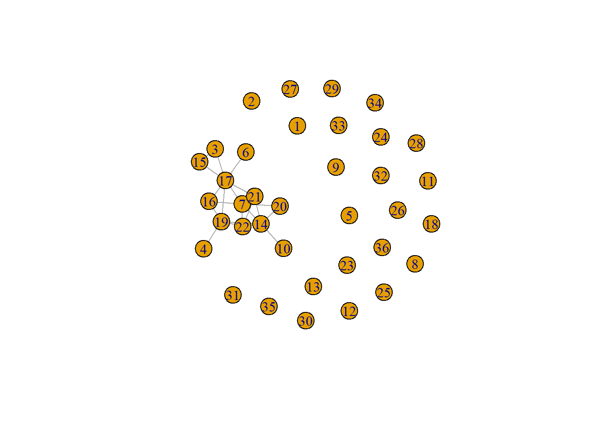
plot(socnet2)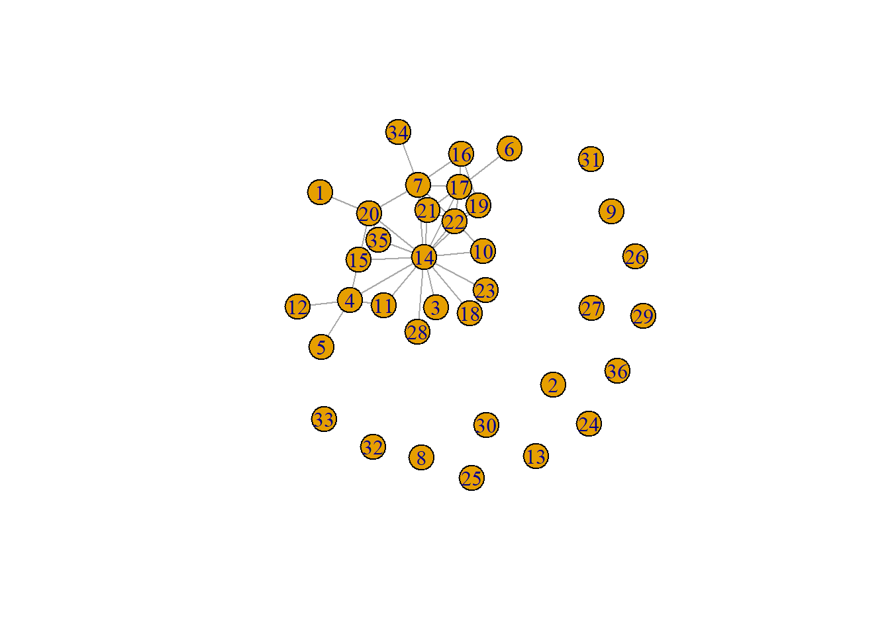
plot(socnet3)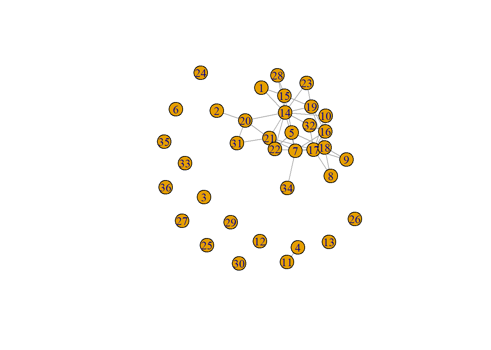
# Making the size of the nodes proportinal to the betweenness score
V(socnet1)$size = betweenness(socnet1, normalized = T, directed = FALSE) * 60 + 10
plot(socnet1, mode = "undirected")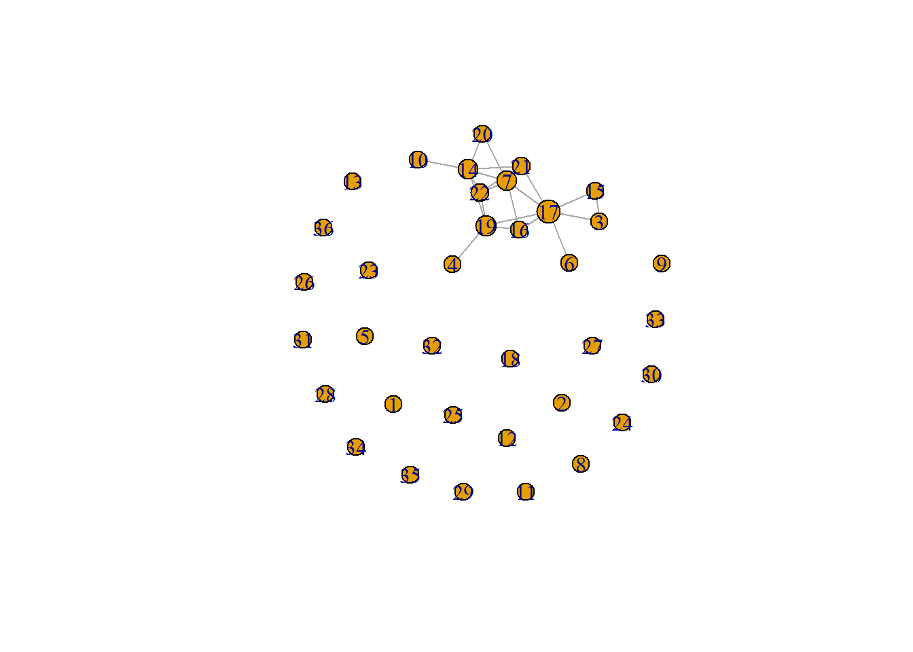
V(socnet2)$size = betweenness(socnet2, normalized = T, directed = FALSE) * 60 + 10
plot(socnet2, mode = "undirected")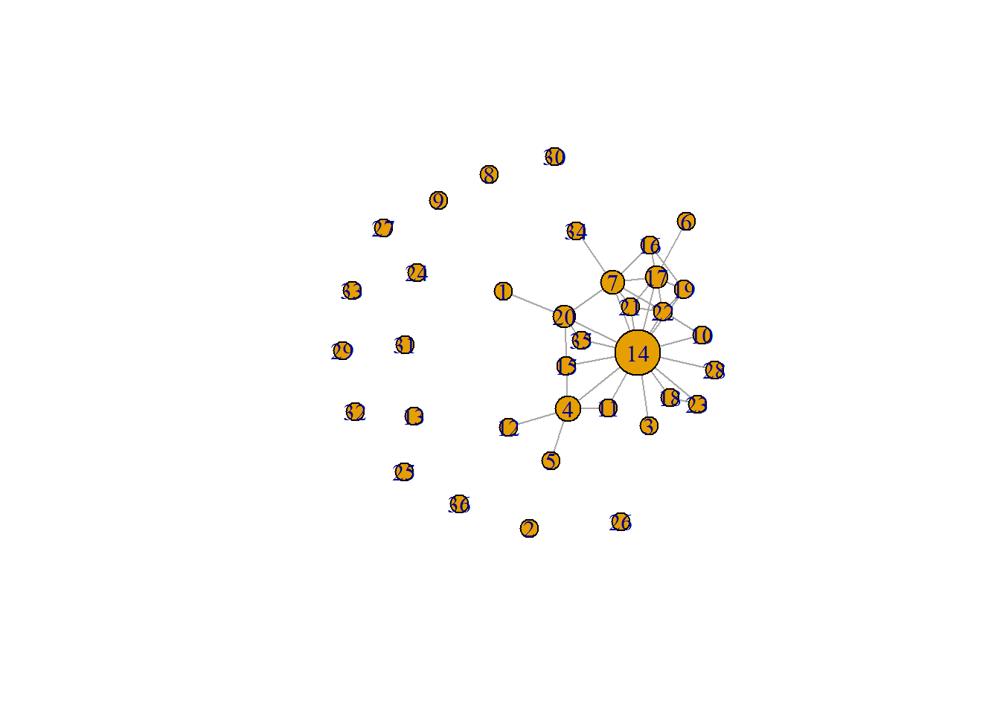
V(socnet3)$size = betweenness(socnet3, normalized = T, directed = FALSE) * 60 + 10
plot(socnet3, mode = "undirected")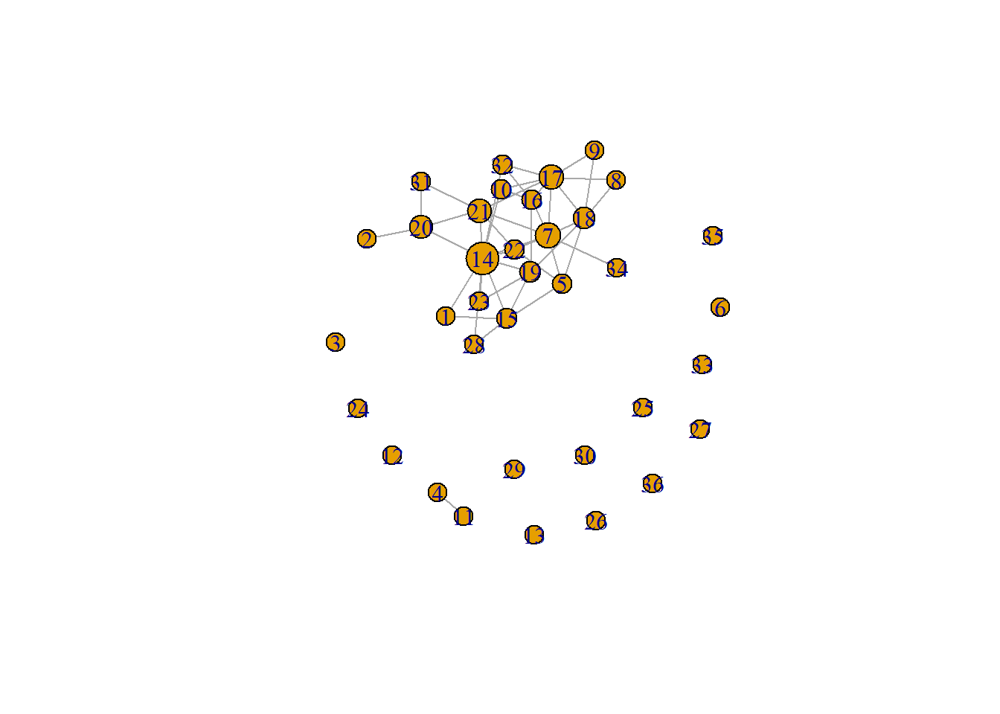
# Putting the information of socnet1 into a dataframe
in_network <- data.frame(as_ids(V(socnet1)))
# Giving the first column the name 'number'
names(in_network)[1] <- "number"
# Creating the object 'ru_nodes' with the names and total cites of the sociology staffmembers
ru_nodes <- soc_df[, c("name", "total_cites")]
# Adding a new variable to the dataset ru_nodes, called 'number' representing the numbers of the
# nodes
ru_nodes$number <- c(1, 2, 3, 4, 5, 6, 7, 8, 9, 10, 11, 12, 13, 14, 15, 16, 17, 18, 19, 20, 21, 22, 23,
24, 25, 26, 27, 28, 29, 30, 31, 32, 33, 34, 35, 36)
# Combining in_network with ru_nodes, based on the numbers of the nodes
in_network <- left_join(in_network, ru_nodes, by = c(number = "number"))
in_network$vcol <- ifelse(is.na(in_network$total_cites), "#E69F00", "#56B4E9")
# Makig a plot with the color of the nodes defined by citation and the names of the sociology staff
# members
plot(socnet1, vertex.color = in_network$vcol, vertex.label = in_network$name)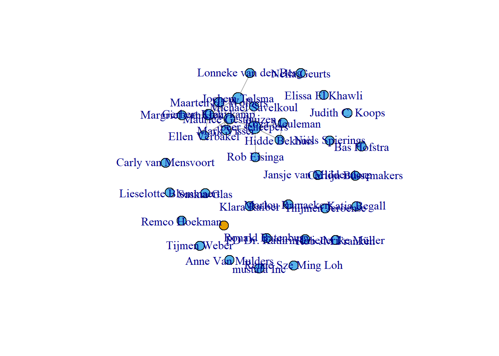
# Defining the colors of the nodes by gender
soc_df$gcol <- ifelse(soc_df$gender == "male", "coral1", "cyan4")
plot(socnet1, vertex.color = soc_df$gcol, vertex.label = soc_df$name)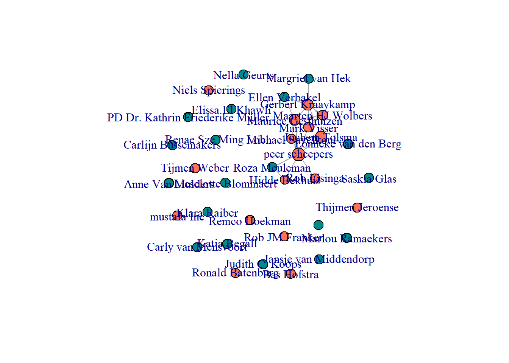
# Making a few changes to the plot to make it more easy to derive information from it
plot(socnet1, vertex.color = soc_df$gcol, vertex.label = soc_df$name, vertex.size = 10, vertex.frame.color = "gray",
vertex.label.color = "black", vertex.label.family = "Helvetica", vertex.label.cex = 0.7, vertex.label.dist = 0.8,
edge.curved = 0.2, edge.arrow.size = 0.5)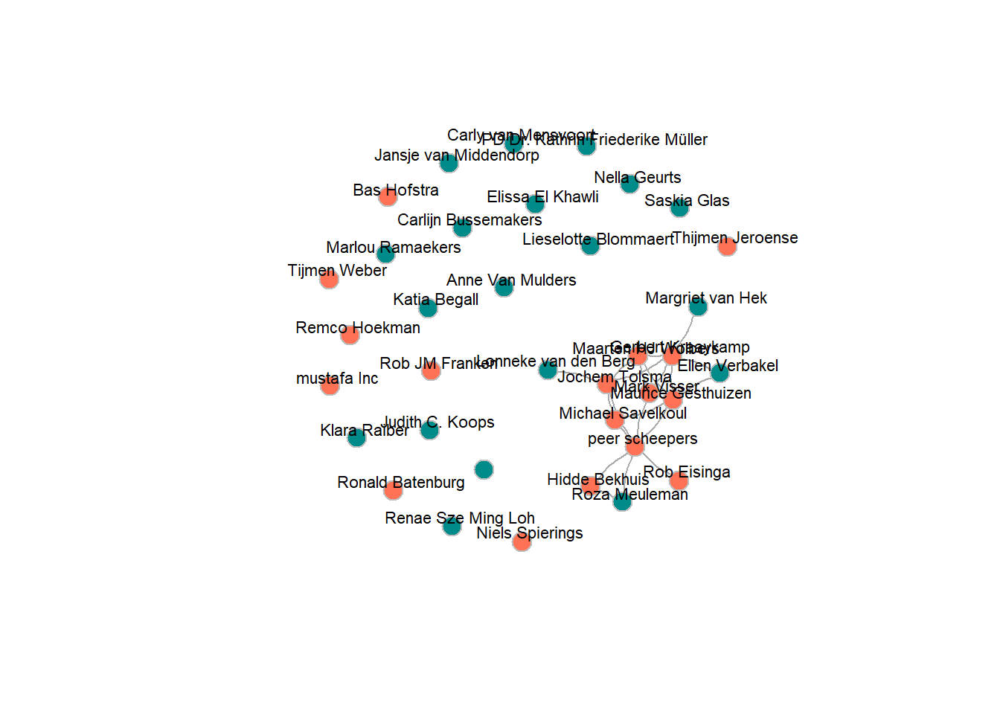
# Adapting the node size to the number of citations
in_network$total_cites <- as.numeric(in_network$total_cites)
# There's made a mistake in the scraping of the data of Mustafa, who has a Master of Science and
# 8955 citations.
plot(socnet1, vertex.color = soc_df$gcol, vertex.label = soc_df$name, vertex.size = ifelse(!is.na(in_network$total_cites),
log(in_network$total_cites), 2), vertex.frame.color = "gray", vertex.label.color = "black", vertex.label.family = "Helvetica",
vertex.label.cex = 0.7, vertex.label.dist = 0.8, edge.curved = 0.2, edge.arrow.size = 0.5)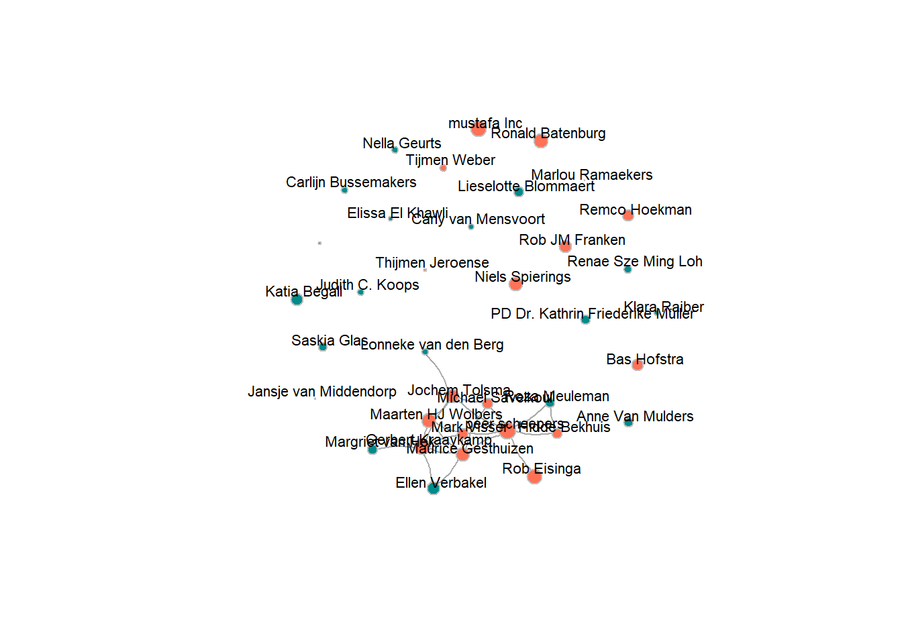
# number of nodes: all networks consist of 36 nodes, or individuals.
vcount(socnet1)#> [1] 36vcount(socnet2)#> [1] 36vcount(socnet3)#> [1] 36# number of edges: the number of edges increases for each wave.
ecount(socnet1)#> [1] 22ecount(socnet2)#> [1] 38ecount(socnet3)#> [1] 44# degree: on average, the number of undirected relations for each node increases for each wave.
degree(socnet1)#> [1] 0 0 2 1 0 1 6 0 0 1 0 0 0 6 2 3 7 0 5 2 4 4 0 0 0 0 0 0 0 0 0 0 0 0 0 0degree(socnet2)#> [1] 1 0 1 5 1 1 7 0 0 2 2 1 0 15 3 3 7 2 4 5 4 6 2 0 0 0 0 1 0 0 0 0
#> [33] 0 1 2 0degree(socnet3)#> [1] 2 1 0 1 4 0 8 2 2 3 1 0 0 11 5 5 8 6 5 4 6 4 2 0 0 0 0 2 0 0 2 3
#> [33] 0 1 0 0# transitivity: the number of nodes with a (high) transitivity index increases for each wave.
transitivity(socnet1, type = c("localundirected"), isolates = c("NaN", "zero"))#> [1] NaN NaN 1.0000000 NaN NaN NaN 0.4000000 NaN NaN
#> [10] NaN NaN NaN NaN 0.3333333 1.0000000 0.6666667 0.1904762 NaN
#> [19] 0.2000000 1.0000000 0.6666667 0.6666667 NaN NaN NaN NaN NaN
#> [28] NaN NaN NaN NaN NaN NaN NaN NaN NaNtransitivity(socnet2, type = c("localundirected"), isolates = c("NaN", "zero"))#> [1] NaN NaN NaN 0.2000000 NaN NaN 0.3809524 NaN NaN
#> [10] 1.0000000 1.0000000 NaN NaN 0.1428571 0.6666667 0.6666667 0.4761905 1.0000000
#> [19] 0.6666667 0.3000000 1.0000000 0.6000000 1.0000000 NaN NaN NaN NaN
#> [28] NaN NaN NaN NaN NaN NaN NaN 1.0000000 NaNtransitivity(socnet3, type = c("localundirected"), isolates = c("NaN", "zero"))#> [1] 1.0000000 NaN NaN NaN 0.3333333 NaN 0.2857143 1.0000000 1.0000000
#> [10] 0.3333333 NaN NaN NaN 0.1454545 0.3000000 0.3000000 0.2500000 0.2666667
#> [19] 0.2000000 0.3333333 0.4000000 0.6666667 1.0000000 NaN NaN NaN NaN
#> [28] 1.0000000 NaN NaN 1.0000000 0.3333333 NaN NaN NaN NaN# betweennessL the amount of nodes that act as bridges increases for each wave.
igraph::betweenness(socnet1, directed = FALSE)#> [1] 0.000000 0.000000 0.000000 0.000000 0.000000 0.000000 12.000000 0.000000 0.000000
#> [10] 0.000000 0.000000 0.000000 0.000000 15.166667 0.000000 0.500000 30.666667 0.000000
#> [19] 16.500000 0.000000 4.000000 1.166667 0.000000 0.000000 0.000000 0.000000 0.000000
#> [28] 0.000000 0.000000 0.000000 0.000000 0.000000 0.000000 0.000000 0.000000 0.000000igraph::betweenness(socnet2, directed = FALSE)#> [1] 0.000000 0.000000 0.000000 39.500000 0.000000 0.000000 31.166667 0.000000
#> [9] 0.000000 0.000000 0.000000 0.000000 0.000000 146.833333 3.000000 0.500000
#> [17] 25.500000 0.000000 4.166667 23.000000 0.000000 4.333333 0.000000 0.000000
#> [25] 0.000000 0.000000 0.000000 0.000000 0.000000 0.000000 0.000000 0.000000
#> [33] 0.000000 0.000000 0.000000 0.000000igraph::betweenness(socnet3, directed = FALSE)#> [1] 0.000000 0.000000 0.000000 0.000000 5.250000 0.000000 35.316667 0.000000 0.000000
#> [10] 2.858333 0.000000 0.000000 0.000000 72.066667 7.866667 4.458333 30.000000 17.283333
#> [19] 13.033333 22.666667 27.675000 2.666667 0.000000 0.000000 0.000000 0.000000 0.000000
#> [28] 0.000000 0.000000 0.000000 0.000000 2.858333 0.000000 0.000000 0.000000 0.000000# diad-census: the amount of (mutual) diads increases for each wave.
dyad.census(socnet1)#> $mut
#> [1] 22
#>
#> $asym
#> [1] 0
#>
#> $null
#> [1] 608dyad.census(socnet2)#> $mut
#> [1] 38
#>
#> $asym
#> [1] 0
#>
#> $null
#> [1] 592dyad.census(socnet3)#> $mut
#> [1] 44
#>
#> $asym
#> [1] 0
#>
#> $null
#> [1] 586# triad-census: the amount of triads increases for each wave.
igraph::triad.census(socnet1)#> [1] 6461 0 620 0 0 0 0 0 0 0 49 0 0 0 0 10sna::triad.census(socmat)#> 003 012 102 021D 021U 021C 111D 111U 030T 030C 201 120D 120U 120C 210 300
#> [1,] 6461 0 620 0 0 0 0 0 0 0 49 0 0 0 0 10igraph::triad.census(socnet2)#> [1] 6031 0 948 0 0 0 0 0 0 0 139 0 0 0 0 22sna::triad.census(socmat2)#> 003 012 102 021D 021U 021C 111D 111U 030T 030C 201 120D 120U 120C 210 300
#> [1,] 6031 0 948 0 0 0 0 0 0 0 139 0 0 0 0 22igraph::triad.census(socnet3)#> [1] 5826 0 1151 0 0 0 0 0 0 0 144 0 0 0 0 19sna::triad.census(socmat3)#> 003 012 102 021D 021U 021C 111D 111U 030T 030C 201 120D 120U 120C 210 300
#> [1,] 5826 0 1151 0 0 0 0 0 0 0 144 0 0 0 0 19# global transitivity: the global transitivity increases from wave 1 to wave 2, and decreases from
# wave 2 to wave 3.
igraph::transitivity(socnet1, type = "global")#> [1] 0.3797468sna::gtrans(socmat)#> [1] 0.3797468triad_socnet1 <- data.frame(sna::triad.census(socmat))
transitivity_socnet1 <- (3 * triad_socnet1$X300)/(triad_socnet1$X201 + 3 * triad_socnet1$X300)
transitivity_socnet1#> [1] 0.3797468igraph::transitivity(socnet2, type = "global")#> [1] 0.3219512sna::gtrans(socmat2)#> [1] 0.3219512triad_socnet2 <- data.frame(sna::triad.census(socmat2))
transitivity_socnet2 <- (3 * triad_socnet2$X300)/(triad_socnet2$X201 + 3 * triad_socnet2$X300)
transitivity_socnet2#> [1] 0.3219512igraph::transitivity(socnet3, type = "global")#> [1] 0.2835821sna::gtrans(socmat3)#> [1] 0.2835821triad_socnet3 <- data.frame(sna::triad.census(socmat3))
transitivity_socnet3 <- (3 * triad_socnet3$X300)/(triad_socnet3$X201 + 3 * triad_socnet3$X300)
transitivity_socnet3#> [1] 0.2835821# Histogram of the number of co-authorship degrees
hist(igraph::degree(socnet1, mode = "out"), xlab = "degree", main = "histogram of co-authorship degrees")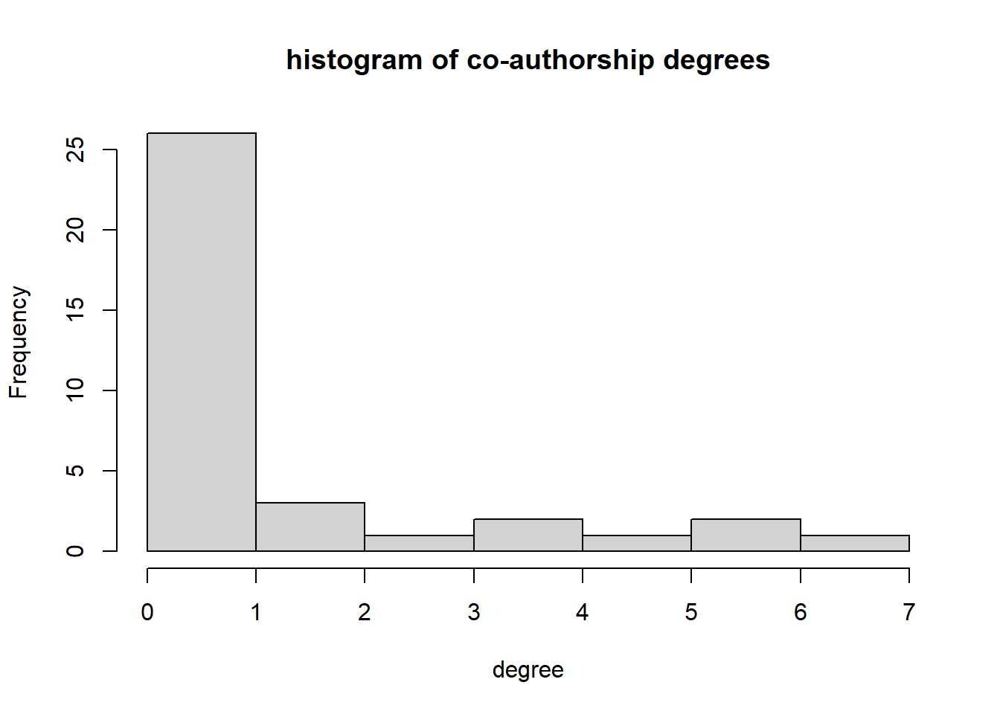
# Visualisation of the gendercomposition of the three waves
library(ggplot2)
# Most basic bar chart ggplot(soc_df, aes(x = factor(gender))) + geom_bar()
ggplot(soc_df, aes(factor(gender), fill = factor(gender))) + geom_bar()# Trying to show the gender segregation in the publication networks
ls()
names(soc_df)
table(soc_df$gender)
is.numeric(soc_df$gender)
gendnum = recode(soc_df$gender, male = 1, female = 2)
gennum = ifelse(soc_df$gender == "male", 1, 2)
soc_df$gender <- character(soc_df$gender)
soc_df$gennum <- ifelse(soc_df$gender == "male", 1, 2)
soc_df$percent_gender <- table(soc_df$gennum/n * 100)
n <- nrow(survey) # Number of students
(percent_gender <- table(survey$gender)/n * 100)# Another attempt to show the gender segregation in the publication networks
# density: observed relations divided by possible relations
fdensity <- function(x) {
# x is your nomination network make sure diagonal cells are NA
diag(x) <- NA
# take care of RSiena structural zeros, set as missing.
x[x == 10] <- NA
sum(x == 1, na.rm = T)/(sum(x == 1 | x == 0, na.rm = T))
}
# calculate intragroup density
fdensityintra <- function(x, A) {
# A is matrix indicating whether nodes in dyad have same node attributes
diag(x) <- NA
x[x == 10] <- NA
diag(A) <- NA
sum(x == 1 & A == 1, na.rm = T)/(sum((x == 1 | x == 0) & A == 1, na.rm = T))
}
# calculate intragroup density
fdensityinter <- function(x, A) {
# A is matrix indicating whether nodes in dyad have same node attributes
diag(x) <- NA
x[x == 10] <- NA
diag(A) <- NA
sum(x == 1 & A != 1, na.rm = T)/(sum((x == 1 | x == 0) & A != 1, na.rm = T))
}
# construct dyad characteristic whether nodes are similar/homogenous
fhomomat <- function(x) {
# x is a vector of node-covariate
xmat <- matrix(x, nrow = length(x), ncol = length(x))
xmatt <- t(xmat)
xhomo <- xmat == xmatt
return(xhomo)
}
# a function to calculate all valid dyads.
fndyads <- function(x) {
diag(x) <- NA
x[x == 10] <- NA
(sum((x == 1 | x == 0), na.rm = T))
}
# a function to calculate all valid intragroupdyads.
fndyads2 <- function(x, A) {
diag(x) <- NA
x[x == 10] <- NA
diag(A) <- NA
(sum((x == 1 | x == 0) & A == 1, na.rm = T))
}
fscolnet <- function(network, ccovar) {
# Calculate coleman on network level:
# https://reader.elsevier.com/reader/sd/pii/S0378873314000239?token=A42F99FF6E2B750436DD2CB0DB7B1F41BDEC16052A45683C02644DAF88215A3379636B2AA197B65941D6373E9E2EE413
fhomomat <- function(x) {
xmat <- matrix(x, nrow = length(x), ncol = length(x))
xmatt <- t(xmat)
xhomo <- xmat == xmatt
return(xhomo)
}
fsumintra <- function(x, A) {
# A is matrix indicating whether nodes constituting dyad have same characteristics
diag(x) <- NA
x[x == 10] <- NA
diag(A) <- NA
sum(x == 1 & A == 1, na.rm = T)
}
# expecation w*=sum_g sum_i (ni((ng-1)/(N-1)))
network[network == 10] <- NA
ni <- rowSums(network, na.rm = T)
ng <- NA
for (i in 1:length(ccovar)) {
ng[i] <- table(ccovar)[rownames(table(ccovar)) == ccovar[i]]
}
N <- length(ccovar)
wexp <- sum(ni * ((ng - 1)/(N - 1)), na.rm = T)
# wgg1 how many intragroup ties
w <- fsumintra(network, fhomomat(ccovar))
Scol_net <- ifelse(w >= wexp, (w - wexp)/(sum(ni, na.rm = T) - wexp), (w - wexp)/wexp)
return(Scol_net)
}
# construct dyad similarity matrix
gender_m <- fhomomat(gender)
# make object to store results
desmat <- matrix(NA, nrow = 4, ncol = 1)
as.vector(socmat2)
# use functions
desmat[1, 1] <- fdensity(socmat2)
desmat[2, 1] <- fdensityintra(socmat2, gender_m)
desmat[3, 1] <- fdensityinter(socmat2, gender_m)
desmat[4, 1] <- fscolnet(socmat2, gender)
colnames(desmat) <- c("Publication network")
rownames(desmat) <- c("total density", "same gender density", "different gender density", "Coleman's homophily index")
knitr::kable(desmat, digits = 3, "html", caption = "Gender segregation in publication network") %>%
kableExtra::kable_styling(bootstrap_options = c("striped", "hover"))# Results: the density decreases over time, which implies that people with publications have higher
# degree centrality than people with no publications. Higher degree centrality of the ego does
# predict publication ties of the ego. Homophily in gender does not predict publication ties. The
# amount of publications of the ego does predict publication ties.
# start with clean workspace
rm(list = ls())
# load dataobjects
load("C:\\Users\\Daphn\\Documenten\\labjournal\\Data\\soc_net_array.RData")
# load('C:\\Users\\Daphn\\Documenten\\labjournal\\Data\\soc_collabs.RData')
load("C:\\Users\\Daphn\\Documenten\\labjournal\\Data\\soc_staff_cit.RData")
load("C:\\Users\\Daphn\\Documenten\\labjournal\\Data\\soc_df_s5.RData")
library(RSiena)
library(tidyr)
# dependent
net <- sienaDependent(net_array)
### Step 1: define data
gender <- as.numeric(soc_df$gender == "female")
gender <- coCovar(gender)
ncollabs <- (soc_df$ncollabs)
ncollabs <- coCovar(ncollabs)
pubsw1 <- pubsw2 <- pubsw3 <- pubsw4 <- NA
for (i in 1:length(soc_df$gs_id)) {
pubsw1[i] <- nrow(soc_staff_cit[(soc_staff_cit$gs_id == soc_df$gs_id[i]) & soc_staff_cit$year >=
2010 & soc_staff_cit$year <= 2012, ])
pubsw2[i] <- nrow(soc_staff_cit[(soc_staff_cit$gs_id == soc_df$gs_id[i]) & soc_staff_cit$year >=
2013 & soc_staff_cit$year <= 2015, ])
pubsw3[i] <- nrow(soc_staff_cit[(soc_staff_cit$gs_id == soc_df$gs_id[i]) & soc_staff_cit$year >=
2016 & soc_staff_cit$year <= 2018, ])
pubsw4[i] <- nrow(soc_staff_cit[(soc_staff_cit$gs_id == soc_df$gs_id[i]) & soc_staff_cit$year >=
2019 & soc_staff_cit$year <= 2021, ])
}
pub_df <- as.matrix(data.frame(pubsw1, pubsw2, pubsw3, pubsw4))
pubs <- varCovar(pub_df)
# year first pub
soc_staff_cit %>%
group_by(gs_id) %>%
mutate(pub_first = min(year)) %>%
select(c("gs_id", "pub_first")) %>%
distinct(gs_id, pub_first, .keep_all = TRUE) -> firstpub_df
soc_df <- left_join(soc_df, firstpub_df)
# if no publication yet, set pub_first op 2023
soc_df %>%
mutate(pub_first = replace_na(pub_first, 2023)) -> soc_df
pub_first <- coCovar(soc_df$pub_first)
mydata <- sienaDataCreate(net, gender, ncollabs, pubs, pub_first)
### Step 2: create effects structure
myeff <- getEffects(mydata)
effectsDocumentation(myeff)
### Step 3: get initial description
print01Report(mydata, modelname = "soc_init")
### Step4: specify model
myeff <- includeEffects(myeff, outAct)#> effectName include fix test initialValue parm
#> 1 degree of ego TRUE FALSE FALSE 0 0myeff <- includeEffects(myeff, sameX, interaction1 = "gender")#> effectName include fix test initialValue parm
#> 1 same gender TRUE FALSE FALSE 0 0myeff <- includeEffects(myeff, egoX, interaction1 = "pubs")#> effectName include fix test initialValue parm
#> 1 pubs ego TRUE FALSE FALSE 0 0### Step5 estimate
myAlgorithm <- sienaAlgorithmCreate(projname = "soc_init")#> If you use this algorithm object, siena07 will create/use an output file soc_init.txt .(ans <- siena07(myAlgorithm, data = mydata, effects = myeff))#> Estimates, standard errors and convergence t-ratios
#>
#> Estimate Standard Convergence
#> Error t-ratio
#>
#> Rate parameters:
#> 0.1 Rate parameter period 1 1.0996 ( 0.2894 )
#> 0.2 Rate parameter period 2 4.0889 ( 1.6359 )
#> 0.3 Rate parameter period 3 3.2817 ( 0.9884 )
#>
#> Other parameters:
#> 1. eval degree (density) -5.7773 ( 0.9923 ) -0.0189
#> 2. eval degree of ego 0.7721 ( 0.2151 ) -0.0316
#> 3. eval same gender -0.5107 ( 0.2805 ) -0.0467
#> 4. eval pubs ego 0.0306 ( 0.3934 ) -0.0425
#>
#> Overall maximum convergence ratio: 0.0867
#>
#>
#> Total of 1859 iteration steps.# (the outer parentheses lead to printing the obtained result on the screen) if necessary, estimate
# further
(ans <- siena07(myAlgorithm, data = mydata, effects = myeff, prevAns = ans))#> Estimates, standard errors and convergence t-ratios
#>
#> Estimate Standard Convergence
#> Error t-ratio
#>
#> Rate parameters:
#> 0.1 Rate parameter period 1 1.0546 ( 0.2554 )
#> 0.2 Rate parameter period 2 4.0662 ( 1.6408 )
#> 0.3 Rate parameter period 3 3.2469 ( 0.9591 )
#>
#> Other parameters:
#> 1. eval degree (density) -5.6885 ( 0.9902 ) 0.0866
#> 2. eval degree of ego 0.7581 ( 0.2142 ) 0.0585
#> 3. eval same gender -0.5063 ( 0.2932 ) 0.0716
#> 4. eval pubs ego 0.0342 ( 0.3593 ) 0.0869
#>
#> Overall maximum convergence ratio: 0.1685
#>
#>
#> Total of 1953 iteration steps.